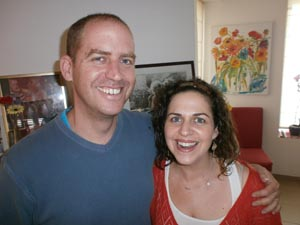
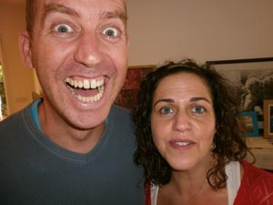
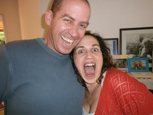
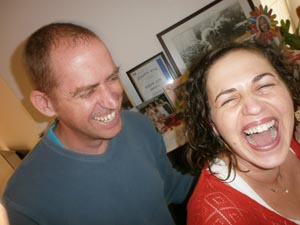
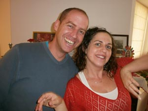
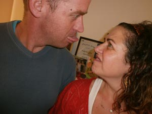
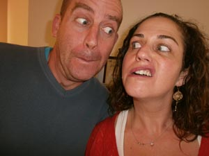
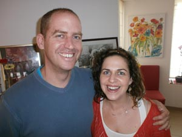
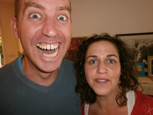
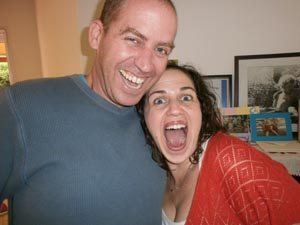
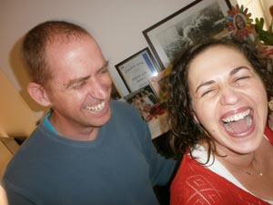
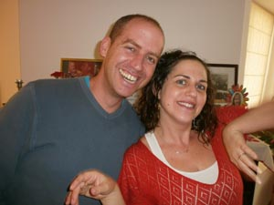
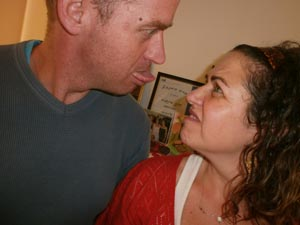
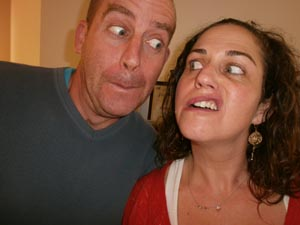
הדיכאון, כמו ים, משתרע רחב,
נפתח למרחק, אין לו דין, אין גבולות.
אני מתפשטת, נמשכת אליו
אל אורכו, אל רוחבו, אל אינסוף מצולות.
ואינני שוקעת. לכל צד מתפרשׁת
שולחת גרורות לכל כיוון רוח,
בלי מצוף, גם בקרש אינני נתפסת.
רק החוף שממנו יצאתי בטוח.
לעתים על פיסות של דמיון מחכה
כמו על נוף מדברי שאיננו קיים
אך גם כשהן נמוגות לא אשקע
כי גם הוא לא ירצה בי, הים.
אנשים מסוימים מהמסטרי, שנשברו בחקירה והודו שהם משוררים, קיבלו מאור הצעה שאפשר לסרב לה, לשלוח שיר משלהם להלחנה. איריס היתה הראשונה. היא שלחה שיר שהיה קרוב לליבה. ברוח המסטרי, איריס, שבימים כתיקונם אינה מודה בקיומם של כישורי הזמרה שלה, הסכימה לבקשתו של אור, על רקע סערת ברקים ורעמים, שאם יהיה לחן לשיר, היא תאזור אומץ ותשיר אותו.
וכך, במסגרת הפקת דיסק היוצרים ממשפחת המסטרי, קיבלה מאיה יום אחד מאור להלחנה את מילות השיר של איריס – מבלי שהיתה ביניהן היכרות. מאיה התחילה במלאכה ובשלב מסויים פנתה לאורי, אחיה, שיצטרף למשימה והלחן הפך לשיתוף פעולה משפחתי מהנה ומרגש. מאיה ואורי הקליטו גרסת "דמו" בטלפון הנייד של אורי ושלחו אותה לאור, שמשך בחוטים של הפרויקט מאחורי הקלעים. גרסת הדמו מצורפת כרצועת "בונוס". אגב, ברגע מסויים של היעדר השראה הוקלטה גם גרסה עם פזמון ראפ לשיר שנגנזה חיש מהר מתוך התחשבות בציבור.
{kind=link}
{kind=link}
{kind=link}
{kind=link}
{kind=link}
{kind=link}
{kind=link}